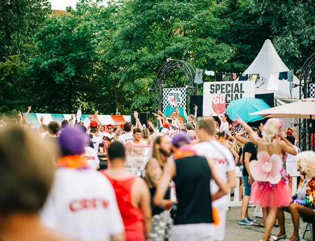
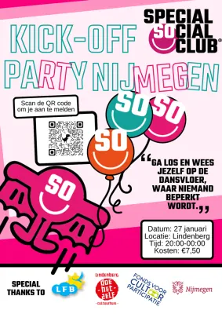

Nieuws ·
Eerste Inclusieve Uitgaansfeest door De Special Social Club en Lindenberg Cultuurhuis in Nijmegen

Op zaterdag 27 januari wordt een bijzondere mijlpaal gevierd in het Lindenberg Cultuurhuis in Nijmegen: het allereerste inclusieve uitgaansfeest van De Special Social Club (SSC). Dit evenement, de Kick-Off Party, staat open voor mensen met een beperking en biedt een veilige, toegankelijke en vreugdevolle omgeving waar iedereen welkom is om te dansen, ontmoeten, of gewoon te genieten van de muziek.
De Special Social Club, bekend om het organiseren van succesvolle inclusieve feesten in Amsterdam, Utrecht en Rotterdam, werkt voor dit evenement samen met Lindenberg Cultuurhuis. De Club streeft ernaar om het uitgaansleven toegankelijk te maken voor iedereen, zonder beperkingen. Met een line-up die DJ Hizzl en het Special Social Soundsystem bevat, belooft het een memorabele avond te worden.
De Special Social Club
Annabelle Koeleman van SSC benadrukt het belang van dergelijke evenementen: “Muziek en feesten toegankelijk maken voor iedereen helpt om sociale barrières te doorbreken en deelname aan sociale activiteiten te vergroten.”
Mycha Kilian, ervaringsdeskundige in opleiding bij de LFB Nijmegen, draagt bij aan de organisatie van het feest met waardevolle inzichten vanuit haar eigen ervaring met een beperking. Mycha’s visie is een feest waar iedereen zichzelf kan zijn, met een gevarieerde muziekkeuze voor alle gasten.
Om het feest voor iedereen toegankelijk te maken, worden er diverse maatregelen getroffen, waaronder een rolstoeltoegankelijke locatie, een prikkelarme chillruimte, en Community Captains voor ondersteuning. Er is zelfs begeleiding beschikbaar vanaf het Centraal Station Nijmegen naar de ingang van het Lindenberg Cultuurhuis.
**Praktische Informatie:**
– Datum en Tijd: Zaterdag 27 januari, 20.00 – 00.00 uur
– Locatie: Lindenberg Cultuurhuis, Ridderstraat 23, Nijmegen
– Tickets: € 7,50 (aan de deur te betalen, cash of pin)
– Vooraf aanmelden verplicht via www.specialsocialconnect.nl
Dit initiatief is een prachtige gelegenheid voor iedereen om deel te nemen aan een inclusief feest dat echt het verschil maakt.
